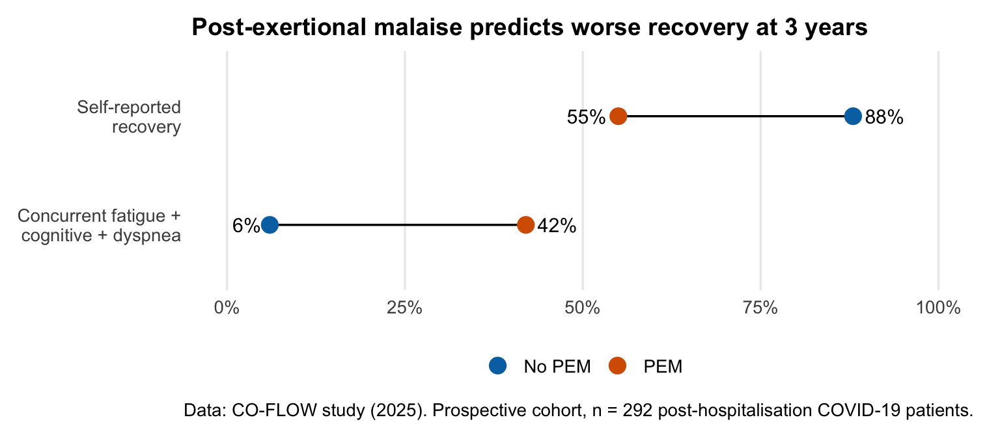

Response to Draft National Guidelines: Utmattelse, langvarig utmattelse, inkl. ME/CFS
Høringssvar — Helsedirektoratet
1 Summary
This document is a detailed response to the Norwegian Directorate of Health’s (Helsedirektoratet) draft national clinical guideline “Utmattelse, langvarig utmattelse, inkl. ME/CFS” (published 4 February 2026, consultation deadline 4 May 2026). I am responding as a patient with lived experience of post-covid condition, and a primary care-taker of someone with ME/CFS, drawing on the published biomedical evidence base.
The draft guideline contains several serious problems that, if implemented, risk harming patients with ME/CFS and post-COVID condition. The central concerns are:
- The guideline conflates ME/CFS with general fatigue, applying the same treatment recommendations to fundamentally different conditions.
- Graded activity is presented as superior to pacing, contradicting NICE 2021 and the biomedical evidence on post-exertional malaise.
- The biomedical evidence base is entirely absent: no immunological, metabolic, neurological, or exercise physiology research is cited.
- PEM is mischaracterised as partly a cognitive/attentional problem rather than an objective physiological response.
- No discussion of harms from the recommended interventions is included.
- The evidence quality is low to very low, yet recommendations use strong normative language (“bør”).
I am a quantitative neurocognitive scientist based in Norway. In late January 2024, I went on sick leave with debilitating fatigue, brain fog, and bodily aches. After four weeks of worsening symptoms, I was diagnosed with post-COVID condition. I was largely bedbound for months. A shower would send my heart rate to 140 bpm and take three days to recover from. Every routine task felt like running a half-marathon. I turned 40 that year, too ill to celebrate.
From February to June 2024, there was little improvement, my body was exhausted. The turning point came in July, when my wife, who herself lives with ME/CFS, found research by Prof. Perikles Simon (Johannes Gutenberg University Mainz) on capillary oxygen delivery deficits in long COVID (Tomaskovic et al., 2023; Tomaskovic et al., 2025). I began implementing an intensive pacing strategy with 30-second breaks after every 30 seconds of activity, including mental tasks. For the first time, I saw measurable improvement.
In October 2024, I entered Godthaab Rehabilitation Centre for an 8-week stay. The structured pacing programme helped: I progressed from fewer than 1,000 daily steps to approximately 2,000. But the key principle was always the same: never exceed capacity. Not graded increases. Not pushing through. Listening to my body and stopping before reaching my limit.
The consequences of overexertion have been devastating and consistent. At the end of February 2025, a combined vet visit and trip to the post office, activities most people would not think twice about, triggered a crash that cost me weeks of hard-won progress. This pattern has repeated itself every time I have been “over-optimistic.” It is not deconditioning. It is not a lack of belief in recovery, I am very positive that I will come through this. It is a physiological response that I can measure in my heart rate variability data and see reflected in my symptom tracking.
As both a post-COVID patient and the primary caretaker for my wife with ME/CFS, I have seen this illness from both sides. I know what pacing looks like when it works, and I know what happens when the healthcare system, through graded activity programmes or suggestions to “focus less” on symptoms, pushes people past their physiological limits. These guidelines, as drafted, risk doing exactly that.
2 Background
2.1 What This Guideline Covers
The draft guideline replaces the 2015 national guidance for CFS/ME and covers assessment, treatment, and follow-up for patients with “utmattelse” (fatigue), “langvarig utmattelse” (prolonged fatigue), and ME/CFS. It recommends the Canada Criteria for ME/CFS diagnosis in adults and the Jason Criteria for children.
2.2 The Core Problem: Scope Conflation
The guideline explicitly states:
“Retningslinjen skiller i utgangspunktet ikke mellom anbefalinger for pasienter med langvarig utmattelse og pasienter med ME/CFS”
(The guideline does not initially distinguish between recommendations for patients with prolonged fatigue and patients with ME/CFS)
This is the guideline’s most fundamental flaw. ME/CFS is classified as a neurological disease (ICD-10 G93.3, ICD-11 8E49). It is defined by post-exertional malaise, a hallmark symptom absent in many patients with “prolonged fatigue” from other causes. These are not the same patient population, they do not have the same pathophysiology, and they do not respond to the same interventions.
By lumping them together, the guideline applies evidence from broad “chronic fatigue” populations, which include people who are deconditioned, depressed, or recovering from other illnesses, directly to ME/CFS patients whose exercise intolerance has a documented pathological basis in skeletal muscle dysfunction, immune dysregulation, and metabolic impairment (Appelman et al., 2024; Charlton et al., 2025).
3 The Missing Evidence: Biomedical Research on ME/CFS
The draft guideline contains no references to biomedical ME/CFS research. This is a striking omission given the volume of published evidence. The guideline’s evidence base is drawn exclusively from the cognitive-behavioural/rehabilitation research tradition.
3.1 Pathophysiology
ME/CFS is a multi-system disease with established biological mechanisms:
- Immune dysregulation: Altered T-cell function, NK cell dysfunction, persistent inflammatory activation, and autoantibody production have been consistently documented (Bohmwald et al., 2024; Peluso & Deeks, 2024).
- Neuroinflammation: PET imaging studies have demonstrated widespread neuroinflammation in ME/CFS patients (Nakatomi et al., 2014).
- Metabolic dysfunction: Metabolomic profiling reveals impaired energy metabolism, altered amino acid profiles, and disrupted lipid metabolism (Germain et al., 2022).
- Autonomic dysfunction: A meta-analysis found 71% prevalence of orthostatic intolerance and 36% prevalence of POTS among post-COVID patients, with similar rates in ME/CFS (Eastin et al., 2025; Wang et al., 2026).
- Microclots and endothelial dysfunction: Structural fibrin(ogen) amyloid microclots resistant to normal fibrinolysis have been documented (Thierry et al., 2025).
- Skeletal muscle pathology: Exercise triggers worsening of muscle abnormalities including mitochondrial dysfunction, amyloid deposits, and immune cell infiltration (Appelman et al., 2024; Charlton et al., 2025).
Notably, Norwegian researchers are at the forefront of biomedical ME/CFS research. The Fluge and Mella group at Haukeland University Hospital has published on endothelial dysfunction in ME/CFS (Sandvik et al., 2023) and circulating proteome abnormalities. The NIH’s landmark deep phenotyping study identified brain, immune, and metabolic abnormalities in ME/CFS patients (Walitt et al., 2024). None of this evidence, including Norwegian-produced evidence, appears in the guideline. A guideline that ignores the biological basis of the condition it purports to treat cannot provide adequate care.
3.2 Post-Exertional Malaise Is Physiological, Not Cognitive
PEM, the cardinal symptom of ME/CFS, has a well-documented physiological basis:
- Two-day CPET studies demonstrate objective, measurable decreases in VO2 and work capacity on Day 2 compared to Day 1, proving that PEM is not subjective or psychological (Stussman et al., 2025).
- Muscle biopsies show that exercise triggers worsening of skeletal muscle abnormalities: reduced oxidative phosphorylation, immune cell infiltration, and amyloid deposits that are measurably worse after exertion (Appelman et al., 2024).
- Mitochondrial dysfunction and a fibre-type shift towards glycolytic (fast-twitch) fibres contributes to the pathological response to exercise (Charlton et al., 2025).
- Absent neural adaptation: Task fMRI shows that healthy controls exhibit decreased BOLD signal on repeated cognitive tasks (reflecting normal neural efficiency), while ME/CFS patients show increased activation. The brain fails to adapt, paralleling the absence of physiological adaptation seen in PEM (Schonberg et al., 2025).
Yet the guideline states:
“Erfaringer viser at kognitive teknikker kan være en hjelp i å fokusere mindre på PEM og andre symptomer.”
(Experiences show that cognitive techniques can help focus less on PEM and other symptoms.)
This framing implies PEM is partly an attentional or cognitive problem, that patients could benefit from thinking about it less. This is not supported by the evidence. PEM is an objective physiological response to exertion that signals ongoing tissue-level damage (Appelman et al., 2024). Telling patients to “focus less” on PEM is analogous to telling a diabetic patient to pay less attention to their blood glucose readings. The measurement reflects a real physiological state, and ignoring it does not make the underlying process stop. It makes it worse.
4 Treatment Recommendations: Contradicting International Guidelines
4.1 Graded Activity vs. Pacing
The guideline uses the umbrella term “aktivitetsregulering” (activity regulation) but within this framework presents evidence favouring “gradert aktivitet” (graded activity) over pacing, citing a meta-analysis that found roughly twice the effect size for graded activity on both fatigue reduction and physical function improvement compared to pacing (Casson et al., 2023).
This is problematic for several reasons:
The evidence comes from “chronic fatigue” populations, not ME/CFS. The Casson et al. (2023) meta-analysis covers 14 studies with 2,094 patients with broadly defined “chronic fatigue”, many without PEM. Applying these results to ME/CFS patients is inappropriate given the different pathophysiology. A systematic review of 18 physiotherapy RCTs found that treatment effects, including those of graded exercise, progressively disappeared as diagnostic criteria more stringently required PEM (Wormgoor & Rodenburg, 2021). In other words, the interventions that appear effective in broad fatigue populations fail to help patients whose defining feature is PEM. This pattern is confirmed by Norwegian survey data from the Fafo/SINTEF research project Tjenesten og MEg: among 660 Norwegian fatigue patients, only 20% of those meeting the strict Canada Consensus Criteria (CCC) reported improvement from rehabilitation programmes, compared to 40% of patients meeting the broader Fukuda criteria. Similarly, only 16% of CCC patients found CBT helpful, compared to 54% of Fukuda patients. The PEM symptom score showed strong negative associations with satisfaction across all intervention types (Kielland et al., 2023).
“Gradert aktivitet” is graded exercise therapy by another name. The NICE 2021 guideline explicitly withdrew GET as a recommendation for ME/CFS, concluding that programmes based on fixed incremental increases in activity are potentially harmful (National Institute for Health and Care Excellence, 2021; Vink & Vink-Niese, 2022). The Norwegian guideline avoids the term “GET” but presents the same concept under a different label.
Patient-reported harm is ignored. Surveys consistently show 50–74% of ME/CFS patients report worsening from GET (Geraghty et al., 2019). In the Tjenesten og MEg survey, 94% of patients meeting the Canada Consensus Criteria reported that participation in NAV work-assessment programmes worsened their illness, while nearly 0% found the programme improved their work readiness (Kielland et al., 2023). A large patient survey across 150+ treatments found GET received the lowest patient-reported outcome score of all treatments studied, while pacing was rated among the most effective (Eckey et al., 2025) (Figure 1). The guideline contains no discussion of adverse effects from any recommended intervention.

The NICE 2021 guideline is referenced but not followed. NICE 2021 represents the most rigorous evidence review of ME/CFS treatments ever conducted. It recommended energy management (pacing) and explicitly warned against graded exercise. The Norwegian guideline cites NICE but reverses its key conclusions.
4.2 The American Heart Association’s Position
The AHA’s 2025 scientific statement on exercise intolerance in Long COVID acknowledged that conventional exercise prescription approaches may not apply to patients with PEM (Cornwell et al., 2025). This further undermines the guideline’s preference for graded activity.
4.3 CBT: Methodological Concerns
The guideline cites Maas genannt Bermpohl et al. (2024) for CBT effectiveness and Kuut et al. (2024) for ME/CFS-specific CBT evidence. The guideline itself notes that Kuut et al. (2024) draws from “only studies from one Dutch specialist ME/CFS center”, the Nijmegen group, whose CBT model is predicated on the theory that ME/CFS is perpetuated by “dysfunctional illness beliefs” and deconditioning. This theoretical framework has been rejected by NICE 2021 and is inconsistent with the biomedical evidence. Norwegian survey data reinforce this: only 16% of patients meeting the Canada Consensus Criteria found CBT helpful, compared to 54% of patients meeting the broader Fukuda criteria, a statistically significant difference that underscores how CBT evidence from mixed fatigue populations does not generalise to ME/CFS (Kielland et al., 2023).
The guideline appropriately frames CBT as a coping tool rather than a cure. However, the practical text still suggests that cognitive techniques can help patients “focus less on PEM” and that “belief in recovery” is essential, language that implies a psychological maintenance model.
5 Recovery Narratives and Survivorship Bias
The guideline includes this passage in the home care section:
“Brukererfaringer fremhever at tilfriskning fra langvarig utmattelse og ME/CFS er mulig gjennom mentale strategier, endrede tankemønstre og sosial støtte.”
(User experiences highlight that recovery from prolonged fatigue and ME/CFS is possible through mental strategies, altered thought patterns, and social support.)
This is sourced from Bakken et al. (2023) — a recovery narratives study with severe methodological limitations:
- Selection bias: Only people who self-report recovery participate
- Survivorship bias: People who tried the same strategies and worsened are excluded
- Diagnostic uncertainty: No verification that participants met ME/CFS criteria
- No control group: Spontaneous remission cannot be distinguished from intervention effects
The guideline does note a counterpoint, that other patients report worsening from mental strategies, but prominently featuring recovery-through-thought-change as evidence-based is irresponsible.
Additionally, the guideline states:
“Pasienter som gjennom kognitive teknikker og testing av aktiviteter har blitt friske av ME/CFS (med PEM) beskriver at troen på å bli frisk har vært helt avgjørende.”
(Patients who through cognitive techniques and testing of activities have recovered from ME/CFS (with PEM) describe that believing in recovery was absolutely essential.)
This unreferenced testimony is included in the rationale for the activity regulation recommendation. It implies recovery from a neurological disease is achievable through positive thinking. This is not supported by evidence and is harmful to patients who are told, implicitly or explicitly, that their continued illness reflects insufficient belief or effort.
6 Evidence Quality Does Not Support Strong Recommendations
GRADE (Grading of Recommendations, Assessment, Development and Evaluation) is the internationally adopted framework used by Helsedirektoratet to rate evidence quality on four levels: HIGH, MODERATE, LOW, and VERY LOW. The rating reflects confidence that the estimated effect is close to the true effect. Crucially, GRADE links evidence quality to recommendation strength: high-quality evidence can support strong recommendations, while low or very low quality evidence should generally yield only conditional (weak) recommendations.
The GRADE assessments in the guideline show:
- CBT for fatigue: LOW confidence
- CBT for physical function: VERY LOW confidence
- Graded activity for fatigue: evidence from non-ME/CFS populations
- PEM-specific evidence: “Research foundation is weak. Few identified studies.”
Despite this, the guideline uses “bør” (should), a strong normative recommendation. In Helsedirektoratet’s own methodology, “bør” signals a strong recommendation where the benefits clearly outweigh the harms, while “kan” (may) signals a weak recommendation where the balance is uncertain. According to GRADE methodology, low-quality evidence should produce conditional/weak (“kan”) recommendations, not strong (“bør”) ones. The mismatch between evidence quality and recommendation strength undermines the guideline’s credibility.
7 What the Guideline Should Include
Based on the international evidence, a responsible ME/CFS guideline should:
7.1 1. Separate ME/CFS from general fatigue
ME/CFS requires distinct recommendations because PEM fundamentally changes the risk-benefit calculus of activity-based interventions. Patients without PEM may benefit from graded approaches; patients with PEM may be harmed by them. The CO-FLOW cohort study found that post-COVID patients with PEM reported only 55% recovery at 3 years compared to 88% without PEM, with quality of life actively declining between years 2 and 3 (Berentschot et al., 2025) (Figure 2). Norwegian survey data show that when PEM was not addressed in rehabilitation, 54.5% of patients reported health worsening at one month, compared to 29% when PEM was addressed. After adjusting for disease severity, patients whose care addressed PEM were roughly three times less likely to worsen after rehabilitation, nearly six times more likely to be satisfied with their stay, and in hospital settings, nearly twelve times more likely to be satisfied with their consultation (Wormgoor & Rodenburg, 2023) (Figure 3).


7.2 2. Adopt pacing/energy management as the primary approach for PEM
The Energy Envelope Theory has empirical support (Brown et al., 2013; Jason et al., 2013; O’Connor et al., 2019). Pacing is the most commonly used and most positively rated self-management strategy among patients (Sanal-Hayes et al., 2023). The PACELOC trial demonstrated reduced post-exertional symptom exacerbation with a personalised pacing programme (Godfrey et al., 2025).
7.3 3. Include stratified exercise recommendations based on PEM status
Gloeckl et al. (2024) provide evidence-based stratification:
- No PEM: standard exercise rehabilitation with monitoring
- Mild PEM: symptom-titrated, low-intensity activity below symptom thresholds
- Moderate-severe PEM: pacing and energy management as primary intervention
7.4 4. Acknowledge the biomedical evidence base
The guideline should reference the published research on immune dysregulation, neuroinflammation, metabolic dysfunction, skeletal muscle pathology, microclots, and autonomic dysfunction. Ignoring this evidence does not make it go away; it simply means the guideline is incomplete.
7.5 5. Include harm data
Any guideline recommending activity-based interventions for ME/CFS must report the evidence of harm. Patient surveys, the NICE 2021 evidence review, and the Cochrane editorial concerns all document significant adverse effects from GET (Geraghty et al., 2019; Vink & Vink-Niese, 2022).
7.6 6. Align with NICE 2021 on key treatment decisions
NICE 2021 represents the gold standard for ME/CFS guidelines internationally. Where the Norwegian guideline diverges from NICE, it should provide a transparent rationale, not simply cite NICE while ignoring its conclusions.
7.7 7. Address the dissenting opinions
Four working group members filed formal dissenting opinions. ME-foreningen, ME-foreldrene, and Norsk Covidforening also submitted dissenting statements. The content of these dissents should be addressed in the guideline text.
8 Conclusion
The draft guideline, despite using the Canada Criteria for diagnosis, fails to translate the implications of that diagnosis into appropriate treatment recommendations. It treats ME/CFS as a subset of “prolonged fatigue” rather than as a distinct neurological disease with specific pathophysiology and specific contraindications.
The evidence base is one-sided, drawing exclusively from the CBT/GET research tradition while ignoring the substantial biomedical literature. The treatment recommendations contradict NICE 2021, present graded activity as superior to pacing using evidence from non-ME/CFS populations, and include no safety data.
If implemented as drafted, this guideline risks:
- Patients with ME/CFS being prescribed graded activity programmes that worsen their condition
- PEM being dismissed as a cognitive/attentional issue rather than recognised as a physiological warning signal
- Recovery being framed as a matter of belief and effort, placing blame on patients who remain ill
- Norway falling further behind international standards of ME/CFS care
I urge Helsedirektoratet to revise the guideline to reflect the current state of scientific knowledge, align with NICE 2021, and protect patients from interventions with documented potential for harm.